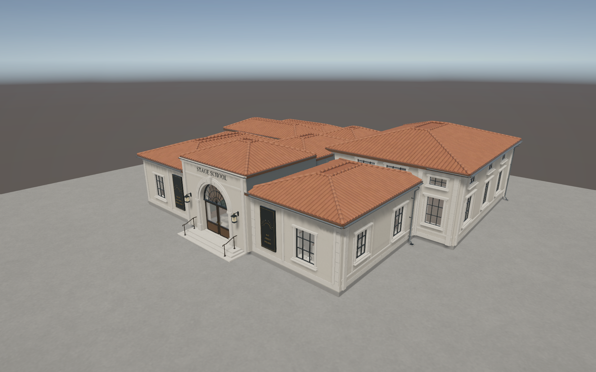
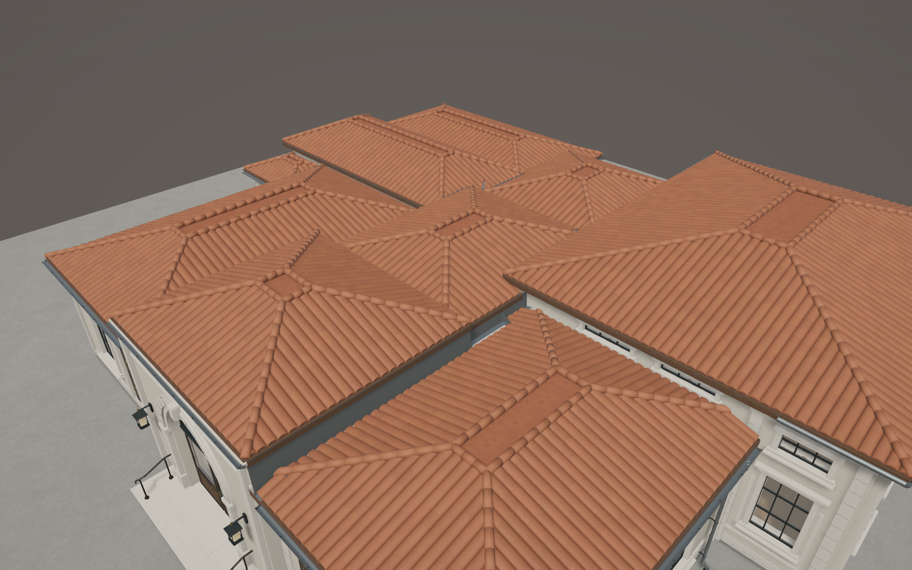
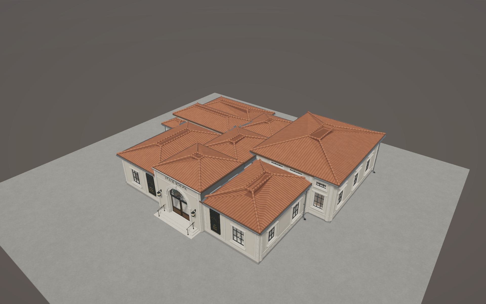
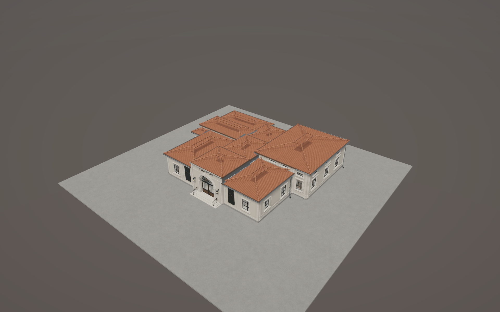
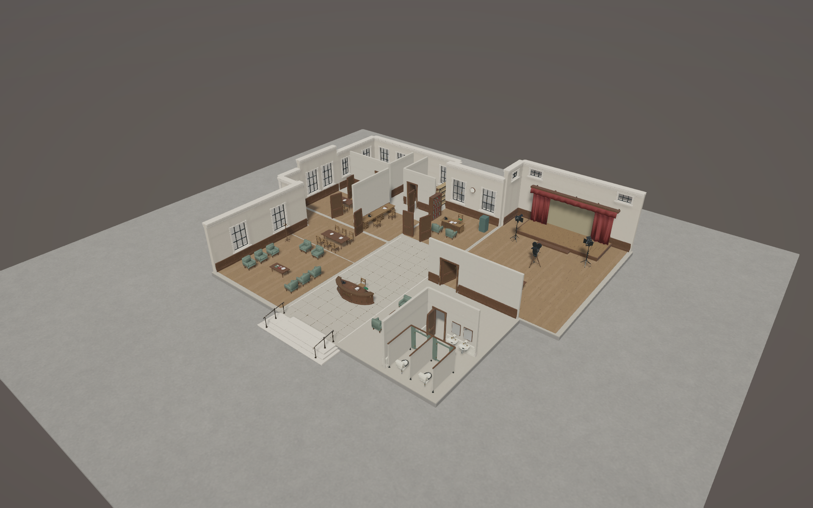
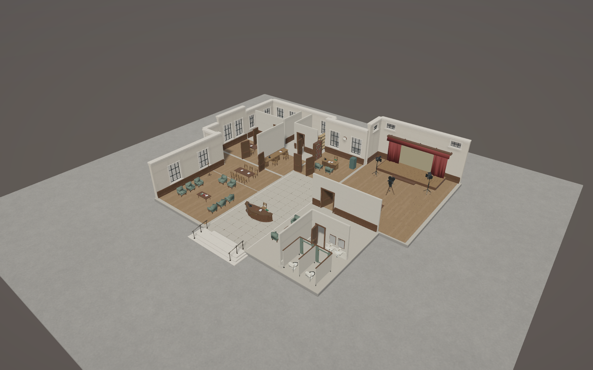
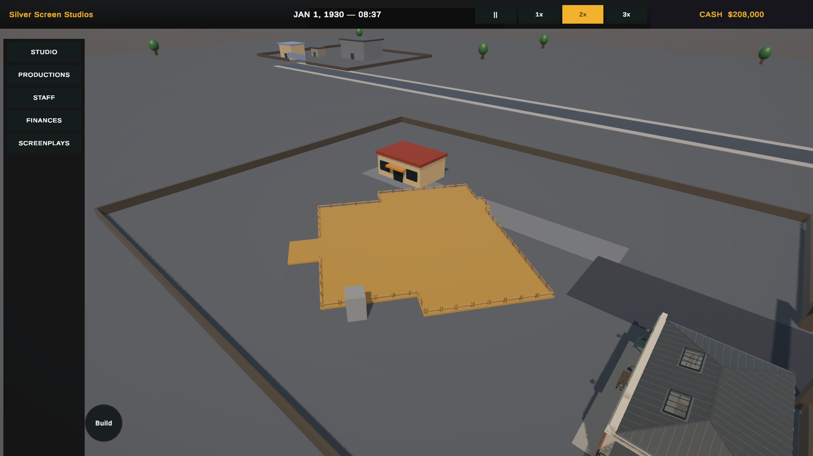
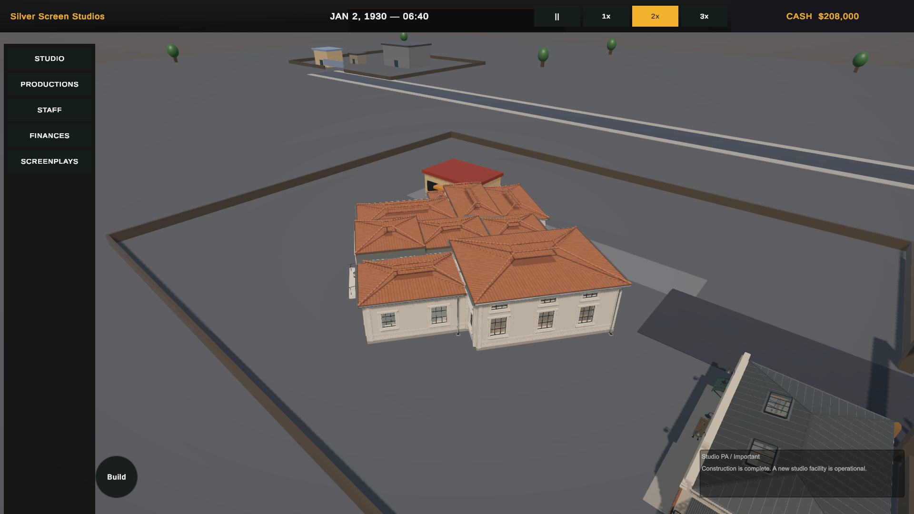

Not ready for runtime approval. Visual fidelity is substantially restored and recorded functional checks pass. Optimization remains incomplete: geometry cost is higher than prior B at every LOD, and material/renderer overhead remains high.
15-item completion report and manual checks · Play Mode results · Seven focused Edit Mode checks · Frozen-source checks · Final Unity sanity
All nine final captures were inspected. Static images isolate one LOD for reliable capture; the final two images show actual Play Mode states. Earlier review images suffered overlapping LOD branches during same-call Edit Mode capture and should not be used for visual comparison. The completed live image uses normal automatic LOD selection.
| LOD | Triangles | Vertices | Renderers | Materials | Slots |
|---|---|---|---|---|---|
| 0 | 1,526,645 | 2,278,090 | 319 | 37 | 784 |
| 1 | 378,399 | 662,866 | 129 | 46 | 503 |
| 2 | 213,974 | 337,029 | 129 | 46 | 491 |








SilverScreen — Stage School B1 completion report Fidelity and integration corrections implemented; runtime optimization remains unfinished. The final corrected captures were inspected. LOD0 closely matches A3.2, and all recorded focused runtime checks pass. The result is not ready for runtime approval: geometry cost exceeds prior B at every LOD, renderer/material overhead remains high, and reusable equipment lower-detail representations are unfinished. These are unfinished optimization requirements, not a measured frame-rate failure. The requested one corrective pass is exhausted; work stops here. 1. LOD derivation strategy changes Derivation now reads original authored components from the frozen A3 source, preserving packet pivots and material mapping. It uses component-level coplanar/bevel reduction, specific roof treatment, local lettering/detail reduction, distant tiny-detail culling, and existing period-furniture lower-detail packets. It no longer relies on assembly-wide welding/collapse/smoothing and nearest-normal transfer. The source blend and master assets were not saved or changed; SHA-256 checks confirm all 548 frozen files unchanged. Independent camera/light assets are retained, but their purpose-built equipment LOD integration remains unfinished. 2. Final complete-building LOD counts LOD0: 1,526,645 triangles; 2,278,090 vertices; 319 renderers; 37 distinct materials; 784 material slots; 119,408,820 estimated mesh-buffer bytes. LOD1: 378,399 triangles; 662,866 vertices; 129 renderers; 46 distinct materials; 503 material slots; 35,991,972 estimated mesh-buffer bytes. LOD2: 213,974 triangles; 337,029 vertices; 129 renderers; 46 distinct materials; 491 material slots; 18,378,696 estimated mesh-buffer bytes. Frozen master: 1,805,401 triangles; 2,631,815 vertices; 319 renderers; 37 materials. Prior B triangles: 676,954 / 318,411 / 167,184. B1 costs are higher at every level. All three triangle guidance ranges are missed. Those ranges are guidance, but this is a substantial unresolved optimization regression, not a small justified overrun. Mesh-buffer estimates exclude textures, colliders, Unity overhead and readable CPU copies; all three LODs remain resident. Counts include repeated instances; packet-only source-check totals are therefore smaller. Nine lower-LOD roof materials and eighteen 1024-square textures were added. Empty material slots are compacted, but renderer/material efficiency has not improved overall (prior lower LODs had 127 renderers; now 129). 3. Roof-specific strategy LOD0 retains authored tile tops/lips and continuous caps while removing tile underside faces. LOD1/2 replace individual tile fields with the existing clipped roof decks and baked approved tile colour/normal surfaces; no lighting is baked. Ridge/hip geometry remains independent and continuous. Lower LOD cap silhouettes are visibly simpler/faceted. Roof massing is unchanged. A more economical cap/deck representation still needs work. 4. Normals, tangents and shading Original component UV packets and material/submesh mappings replace global nearest-surface normal transfer. Roof deck tangent-space normal textures use the deck basis and consistent UV bounds. Unity builds mesh tangents for the resulting UVs. Finite-value/index checks pass; final Unity inspection reports zero missing meshes/materials and compileFailed=False. The close comparison shows substantially consistent stucco, bronze, glazing and roof appearance. This is not an exhaustive numeric equivalence proof for every vertex/tangent. 5. Fixed-camera visual comparison The master and runtime close captures use identical framing and closely agree; reduced fine lettering remains visible on inspection. A critical evidence bug was found: same-call Edit Mode ForceLOD plus Camera.Render allowed overlapping LOD representations in review captures, producing apparent chipped roof fields and material corruption. Corrected static captures explicitly activate one visual branch and restore all branches afterward. The completed Play Mode capture uses normal automatic LOD selection and also looks clean. The old B gallery is historical, contaminated evidence; the original B derivative was not separately recaptured, so this does not exonerate all of its simplification. All nine final B1 captures were visually inspected. 6. Recursive attachment ownership The prefab has 123 reveal groups and 38 anchors. Ceiling -> mount ownership -> pendant chains, curtain-support -> drapery chains, roof attachments, shell fixtures and door/hardware ownership are explicit; reference/cycle checks pass. Pendant mount and fixture remain combined physical mesh geometry beneath an ownership node, avoiding another renderer. Curtain supports have their own semantic group. Independent furniture remains independent. Focused tests verify ownership and reveal restoration across LODs. 7. Compound construction blocker Shared BuildingDefinition compound placement metadata drives construction exclusion and dressing. Each reserved rectangle contributes an inset blocker/carving obstacle; perimeter dressing follows the rectangle union rather than its enclosing rectangle. Shared/internal edges are omitted. A corrective fix removes near-zero edge fragments caused by nearly coincident coordinates. At yaw 37 degrees, a legally placed 2x2 recess neighbour remains clear of blockers and dressing; all-phase Edit Mode checks also pass. Compound dressing uses perimeter fences and existing phase presentation, without reproducing every legacy scaffold/material-pile arrangement. 8. Generic door traversal BuildingDoorTraversal is installed by the shared EmployeeNavigationProfile and uses active AuthoredBuildingDoor instances and authored portal NavMeshLinks. A pathing agent approaches a closed door, opens it, waits a frame, crosses the portal and completes the link. Unowned links respect the previous agent traversal policy. Authored pivots/barriers and synchronized LOD leaf states are retained. Doors stay open after passage; optional closing is not implemented. This is shared behavior, not Stage School NPC-name logic, and cubicle leaves are not public navigation links. 9. Play Mode reveal/LOD result One completed focused runtime session passed all recorded checks after an initial test-harness setup retry for an EnterPlayMode/domain-reload iterator issue. Actual InputSystem events exercised delayed hover, fade-in, click pinning, pointer departure, orbit/rapid zoom while pinned, Escape release/fade-out and restored closed visibility through automatic LOD changes. The session used yaw 37. These are state checks plus inspected stills, not a frame-by-frame crossfade recording. Transition smoothness and intermittent single-frame attachment artifacts remain manual checks. Seven focused Edit Mode test methods passed via direct relay invocation; the full project suite was not run. The UnityTest wrapper XML passes, but detailed runtime Check calls write PASS/FAIL to live.txt rather than throwing assertions; every recorded Check was PASS. 10. Live construction lifecycle The isolated integration scene uses real StudioBootstrap and StudioConstructionDriver.Service.Place. Placement created a gated site; zero workers caused no progress. Four real domain employees contributed through V2B proficiency/diminishing-return work calculations and all five phases. Dev-controlled arrival/work advancement accelerated the run; physical builder travel was not tested. The actual completion event enabled the production building, removed dressing, released assignments/person reservations, scheduled and finished async navigation, and preserved selected Fast/2x simulation speed and its world adapter. The largest measured dev clock Advance call was 31.31 ms; this is not a profiler frame measurement and does not prove hitch-free completion. No synchronous nav rebuild was introduced. The final screenshot shows the actual completed state, not a manually enabled stand-in. 11. Navigation using real doors A real NavMeshAgent, radius 0.35 and speed 7, reached reception, waiting, audition, Director Interview, Flexible Evaluation, staff, records, equipment and service approach destinations with complete paths and automatic door opening. Doors were initially closed; tests did not explicitly open them first. Each route reset the agent to an exterior approach. The recorded route named exit also starts outside, so an actual interior-to-exterior exit traversal was NOT specifically verified. Multi-agent contention, physical builder arrival and optional door closing were not covered. 12. Flexible Evaluation anchor Moved the authored candidate anchor to (-10.4, 0.36, 4.15). Observed NavMesh adjustment is 0.02749979 m, improved from approximately 0.152 m. The live route completed. 13. Remaining limitations and status Blocking unfinished work: excessive LOD0/1/2 geometry and memory, high material-slot overhead, increased lower-LOD material count, and unimplemented reusable equipment lower-detail integration. High-detail collision is also retained. No broad profiling was performed, so no FPS/GPU budget claim is made. Validation gaps: true inside-to-exit route, transition smoothness, multi-agent doors and measured completion-frame hitch. Existing Console issue: SilverScreen.Editor.NewStudioSceneAuthoring missing ExtensionOfNativeClass; no new compile failure. No Stage School C, economy rebalance, source-art redesign, commit or push. Studio.unity was not edited or saved by this task; its pre-existing dirty state was preserved. 14. Files changed by B1 (paths relative to repository) Source/generation: ArtSource/StageSchoolB/derive_lods.py ArtSource/StageSchoolB/bake_roofs.py ArtSource/StageSchoolB/build_b1_review.py ArtSource/StageSchoolB/inspect_topology.py, inspect_slots.py, inspect_normals.py (diagnostics) ArtExports/StageSchoolB/lod0.json.gz, lod1.json.gz, lod2.json.gz and generated provenance Unity implementation: Assets/SilverScreen/Environment/StageSchoolB/Editor/StageSchoolRuntimeBuilder.cs Assets/SilverScreen/Environment/StageSchoolB/Runtime/AuthoredBuildingDoor.cs Assets/Scripts/Domain/Buildings/BuildingDefinition.cs Assets/Scripts/Presentation/Buildings/BuildingDoorTraversal.cs Assets/Scripts/Presentation/Buildings/ConstructionSiteView.cs Assets/Scripts/Presentation/Buildings/ConstructionDressingGenerator.cs Assets/Scripts/Presentation/Employees/EmployeeNavigationProfile.cs Assets/Tests/Editor/StageSchoolRuntimeTests.cs Assets/Tests/Editor/StageSchoolB1Validation.cs Generated Unity assets/evidence: Assets/SilverScreen/Environment/StageSchoolB/Resources/StageSchool_Runtime.prefab Assets/SilverScreen/Environment/StageSchoolB/ derived mesh assets and RoofSurfaces textures/materials Assets/SilverScreen/Environment/StageSchoolB/StageSchool_RuntimeReview.unity Assets/SilverScreen/Environment/StageSchoolB/StageSchool_B1IntegrationReview.unity Associated Unity .meta files for new assets; existing identities preserved ArtReview/StageSchoolB1/ captures, validation scripts/results, metrics, gallery and this report ArtReview/StageSchoolB/ refreshed build metrics/checks and link to B1 review The workspace already contained extensive unrelated modified/untracked files. This is the task-specific inventory, not a claim that all git changes belong to B1. 15. Exact manual checks a. Open B1 review.html. Compare master/runtime close views, roof caps, façade metal/glazing and distant tile rhythm. Inspect revealed LOD1/2 attachment placement. b. Open StageSchool_B1IntegrationReview.unity, enter Play Mode and place Stage School around yaw 37 with a legal neighbour in a recess. Check temporary fences/blockers stay out of that neighbour throughout all phases. c. After completion, hover briefly and then hold, pin by click, move pointer away, orbit and rapidly zoom across LOD thresholds; inspect closed and revealed fades for flashes/floating fixtures. Escape should restore all materials and visibility. d. Send real workers through initially closed entrance/interior doors to the listed destinations, then explicitly route an interior worker OUT to the exterior. Check opposing traffic and clearance. e. Observe completion with selected simulation speed unchanged, released workers/reservations, cleared dressing and settled nav. Profile the completion frame and representative closed/revealed views before runtime approval; the current mesh/material costs need further work. f. Do not save runtime state over Studio.unity or alter the frozen master during review. Stage School B still has blocking runtime defects Reason: fidelity is substantially restored, but the runtime optimization correction remains incomplete and is more expensive than prior B; the requested runtime validation also has the explicit gaps above.